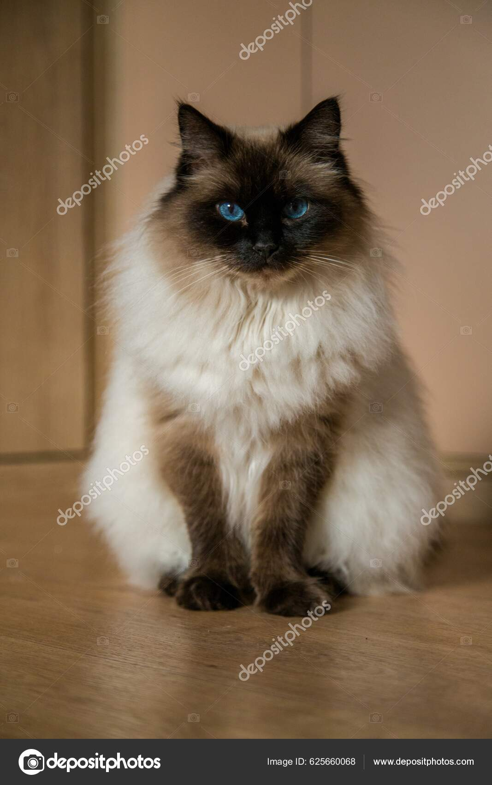

Välkommen till denna sida som handlar om ragdoll-katter!
Välkommen till denna sida som handlar om ragdoll-katter!
Ragdoll-katter har triangelformade huvuden med nosar som är lite böjda.
Katterna har även runda tasar med tofsar på.

Ragdoll-katter är lugna och tystlåtna.
Dessa katter gillar även att vara med sin familj och är nyfikna.
Ragdoll-katter kommer ursprungligen från USA.
Det har funnits en myt om att Ragdoll-katterna inte känner någon smärta som en trasdocka men detta är falskt.